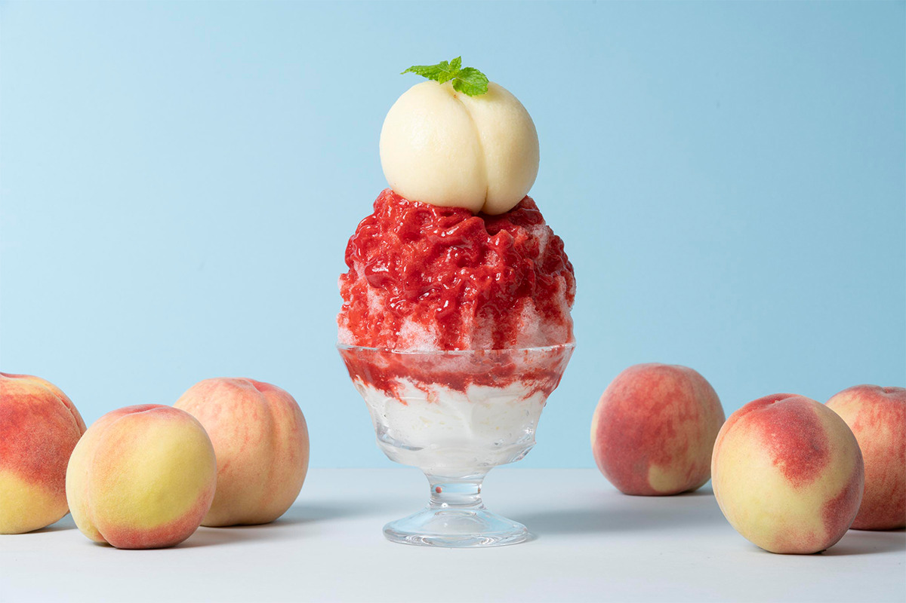
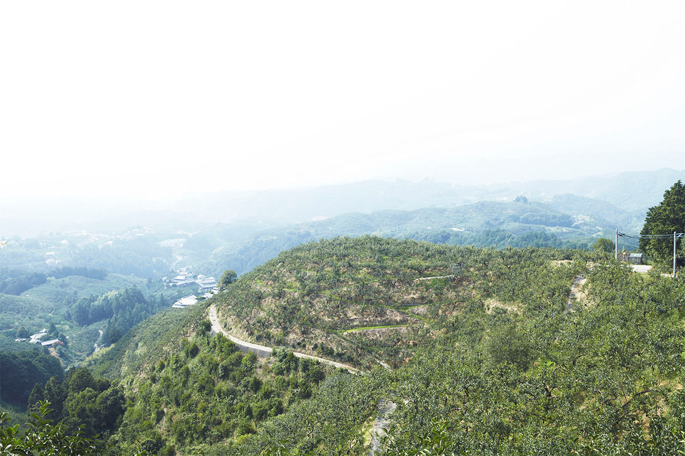
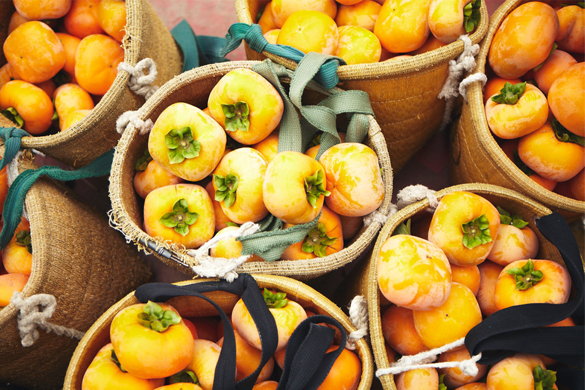
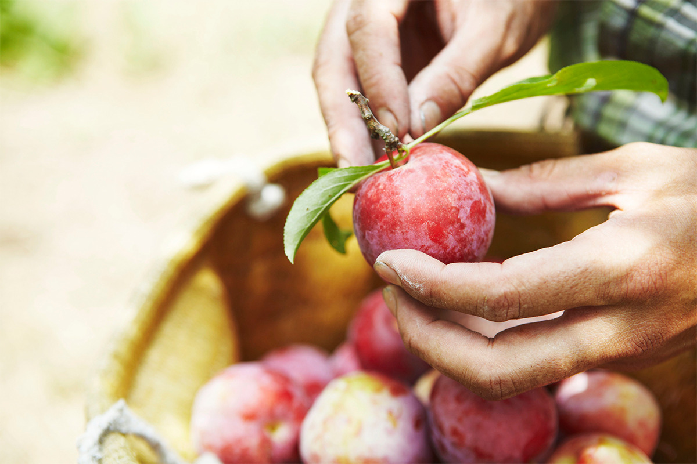
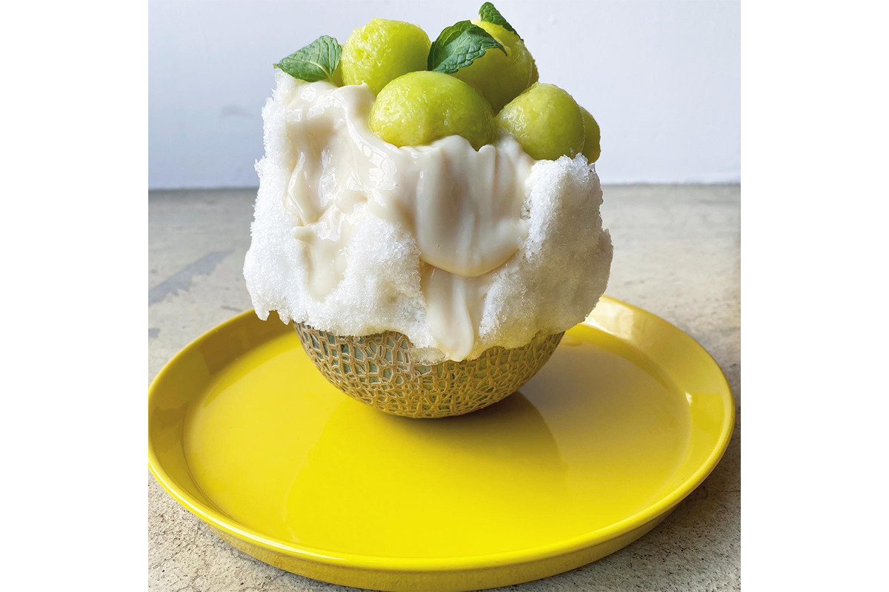
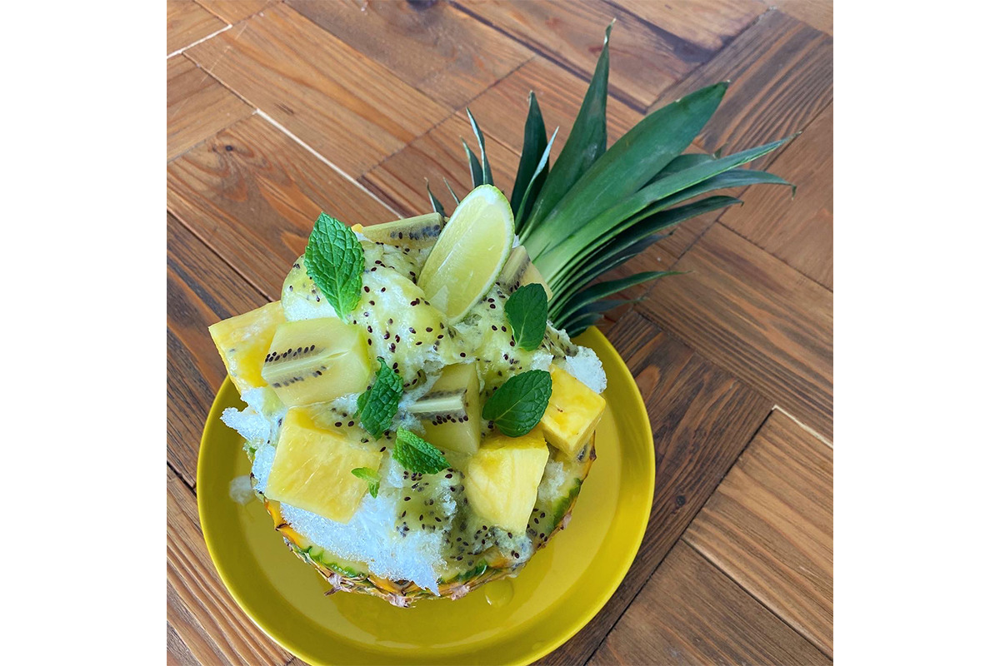
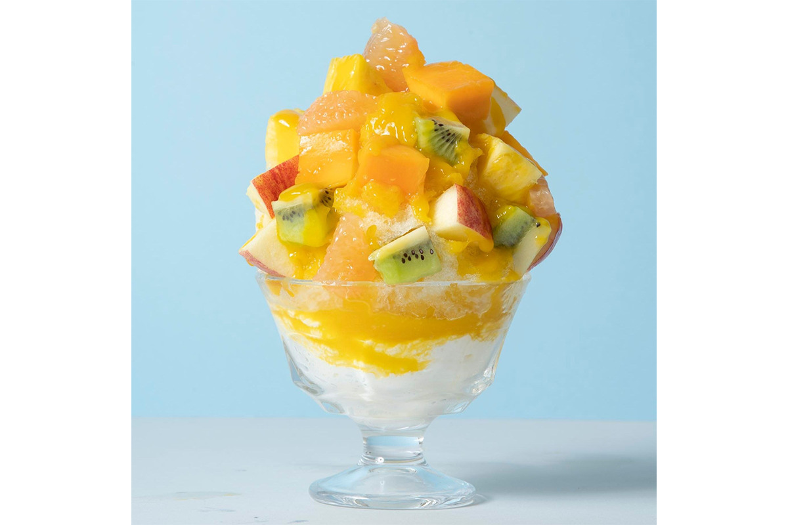
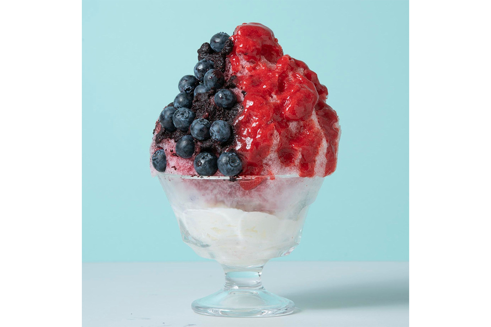
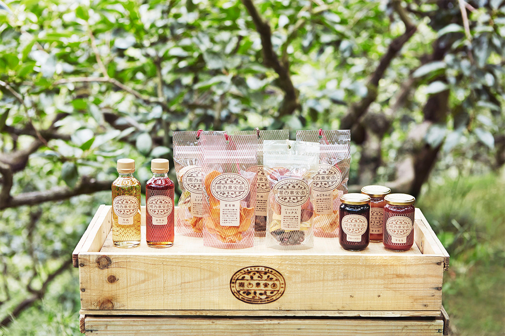
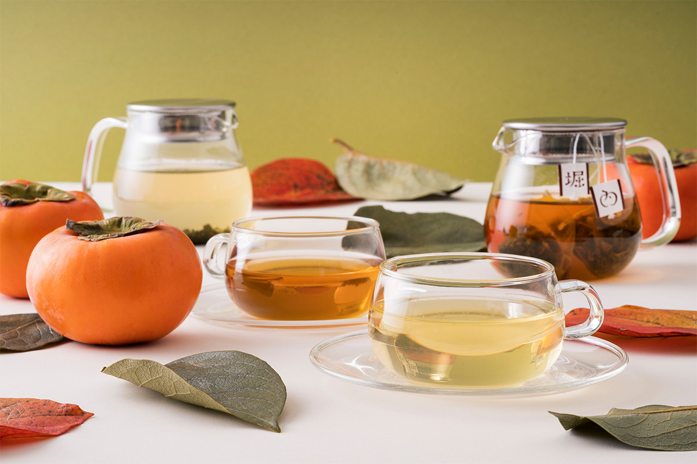

Префектура Нара · Годзё и город Нара · еда
Horiuchi Fruit Farm: колотый лёд с целым персиком из садов Ёсино

Летом в кафе Horiuchi Fruit Farm в Наре подают колотый лёд, на который кладут целый персик или половину дыни. Фрукты приезжают из собственных садов семьи в горах Ёсино, где их выращивают с 1903 года.
Сад
Шесть поколений садоводов в горах Ёсино
Horiuchi Fruit Farm это хозяйство в городе Годзё на юге префектуры Нара, у подножия гор Ёсино. Землю здесь расчистили под сады в 1903 году, и сегодня ими занимается уже шестое поколение семьи. Хозяйство выращивает только фрукты. Главная гордость сада это «столетняя хурма»: деревьям больше ста лет. Кроме хурмы здесь растят японскую сливу умэ, голубику, сливу сумомо и айву.

Почву в садах готовят из того, что есть под рукой в Ёсино: в дело идут материалы из местных криптомерий и кипарисов хиноки. Поэтому земля здесь всегда мягкая и рыхлая.


Главное правило хозяйства: брать фрукт тогда, когда он вкуснее всего. По этому принципу отбирают и сырьё для переработки, чтобы в каждом продукте остался сгущённый вкус спелого плода. В 2002 году семья начала сама перерабатывать урожай, а в 2017 году в Наре открылся первый собственный магазин с кафе, где фрукты можно попробовать на месте.
Кафе
Колотый лёд под горой фруктов
Колотый лёд какигори в кафе при фруктовом саде, конечно, строят вокруг фруктов, и их кладут не скупясь. Внутри льда прячется эспума, лёгкая фруктовая пена, поэтому по мере того как ешь, вкус меняется два, а то и три раза. Фрукты к тому же ценят за пользу: считается, что они помогают снять усталость, хороши для кожи и очищают организм. Неудивительно, что среди поклонников этого льда особенно много женщин.
Соусы здесь варят только из фруктов и сахара, поэтому они густые и насыщенные. Набор вкусов меняется вместе с сезоном: каждый лёд подают, пока в саду есть подходящие фрукты, так что в любой день можно встретить что-то новое.
Самый эффектный лёд «Целый персик со сливой»: сверху лежит целый персик, а лёд пропитан кисло-сладким соусом из сливы сумомо. Для любителей дыни есть «Целая дыня»: под лёд уходит половина плода, а к нему подают домашнее сгущённое молоко со вкусом сливы умэ. Получается удачная пара. В «Целом ананасе с золотым киви» много ананаса и киви, и в жаркий день он освежает лучше других. Если на полпути выжать сверху лайм, появится свежий аромат.


«Тайваньские тропики» подойдут тем, кто хочет попробовать всего понемногу: на густой манговый соус выкладывают шесть видов фруктов. В «Клубнике с голубикой» ягоды выращены в Ёсино. Голубика сверху лопается во рту, как капля сладкого сока.


Horiuchi Fruit Farm, магазин Нара-Сандзё
- Адрес
- префектура Нара, город Нара, Цунофури-тё, 23
- Телефон
- +81 742-93-8393
- Часы работы
- 10:00–19:00 (последний заказ в 18:30)
- Цены / Вход
- колотый лёд от 1190 до 1980 иен с налогом (2021 год)
С собой
Сиропы, сушёные фрукты и джемы
Всё, что делает хозяйство из своего урожая, строится на трёх условиях: японские фрукты, только спелые и без добавок.

Сиропы получаются, когда спелые фрукты долго и медленно настаивают с сахаром из сахарной свёклы, и больше в них ничего нет. Сок фруктов выходит полностью, поэтому у каждого сиропа свой яркий вкус. Сушёные фрукты делают из отборного урожая двумя способами. Полусушёные остаются мягкими, а сублимированные приятно хрустят. Их можно есть просто так, полусушёные хороши, если замочить их в йогурте, а сублимированные можно мелко нарезать и бросить в бокал игристого вина. Джемы варят вручную, каждую партию отдельно, и в них остаются целые кусочки фруктов.
Чай
Чай из листьев хурмы

Для чая из листьев хурмы у подножия гор Ёсино заложили отдельный сад. Деревья растят с органическими удобрениями и обрезают так, чтобы они давали как можно больше листвы, а не плодов. Листья собирают вручную и обрабатывают так же, как японский зелёный чай: долго пропаривают и сушат. Чай получается мягким, в нём много полезных веществ и нет кофеина. Его советуют тем, кто следит за здоровьем и красотой, и будущим мамам.